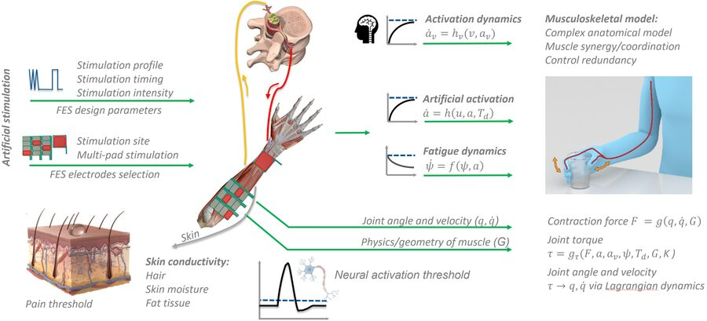
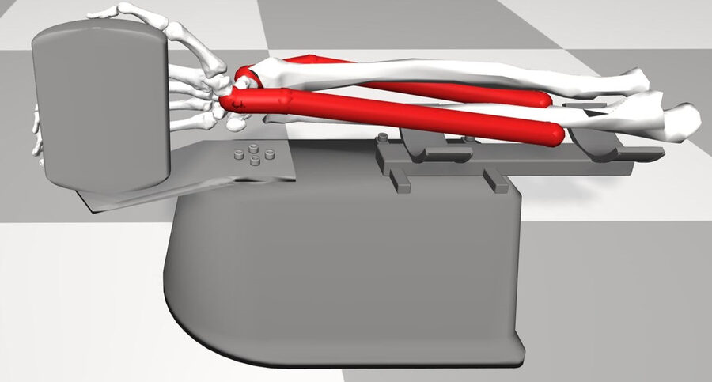
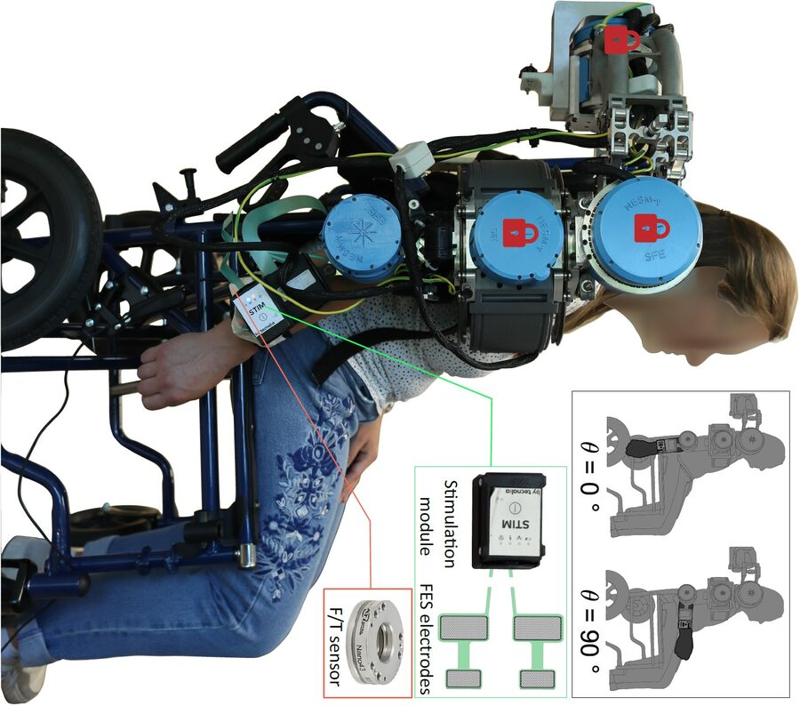
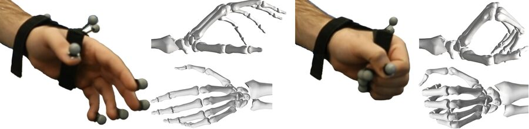

Neuromuscular modeling for FES
Participant-specific, control-oriented models of the stimulation-to-torque pathway that capture inter-individual variability, fatigue and the attainable torque of each muscle group.
I am a PhD candidate at the Chair of Information-oriented Control, Technical University of Munich, advised by Prof. Sandra Hirche. I develop cooperative shared control for hybrid FES-exoskeletons, wearable systems that combine electrical stimulation of a person's own muscles with robotic assistance to restore arm and hand function after stroke.
My work spans participant-specific neuromuscular modeling, EMG-based estimation of voluntary effort under stimulation, and dynamic allocation of effort between muscles and motors, validated in human studies and with stroke patients in the EU Horizon project ReHyb. I trained in mechanical engineering and control at Sharif University of Technology and Shiraz University, and expect to complete my PhD in early 2027.
Open to postdoctoral and research positions in control, rehabilitation robotics and human-robot interaction.
Hybrid FES-exoskeletons are redundant: the same joint torque can come from stimulated muscles, from motors, or from the user's own effort. My thesis, Cooperative Shared Control of Hybrid FES-Exoskeleton, asks how to model each source, estimate the user's contribution, and share the work between them safely and comfortably.

Participant-specific, control-oriented models of the stimulation-to-torque pathway that capture inter-individual variability, fatigue and the attainable torque of each muscle group.

An adaptive filter removes stimulation artifacts from surface EMG so the user's voluntary torque and hand intent can be estimated in real time and kept in the loop.

Model-based shared control and a dynamic control allocator that distributes torque between FES and exoskeleton in real time, respecting device limits, fatigue and user preference, with stability guarantees.

A wearable soft exoglove combined with multi-array FES for functional finger and thumb movements, at least doubling finger mobility compared with stimulation alone. Ongoing: a hand prosthesis driven by high-density EMG for dexterous movements.
Figures from my dissertation, CC BY 4.0.
@article{kavianirad2025dynamic,
title = {Cooperative Control of Hybrid FES-Exoskeleton: Dynamic Allocation},
author = {H. Kavianirad and S. Endo and D. Astarita and L. Amato and E. Trigili and S. Hirche},
journal = {arXiv preprint arXiv:2511.10117},
year = {2025}
}
@inproceedings{kavianirad2024dexterous,
title = {Toward Dexterous Hand Functional Movement: Wearable Hybrid Soft Exoglove-FES Study},
author = {H. Kavianirad and F. Missiroli and S. Endo and L. Masia and S. Hirche},
booktitle = {2024 10th IEEE RAS/EMBS International Conference for Biomedical Robotics and Biomechatronics (BioRob)},
year = {2024},
pages = {1346--1351},
doi = {10.1109/BioRob60516.2024.10719731}
}
@inproceedings{das2024framework,
title = {Framework for Learning a Hand Intent Recognition Model from sEMG for FES-Based Control},
author = {N. Das and S. Endo and H. Kavianirad and S. Hirche},
booktitle = {2024 10th IEEE RAS/EMBS International Conference for Biomedical Robotics and Biomechatronics (BioRob)},
year = {2024},
pages = {1320--1327},
doi = {10.1109/BioRob60516.2024.10719910}
}
@inproceedings{kavianirad2023model,
title = {Model-Based Shared Control of a Hybrid FES-Exoskeleton: An Application in Participant-Specific Robotic Rehabilitation},
author = {H. Kavianirad and M. Forouhar and H. Sadeghian and S. Endo and S. Haddadin and S. Hirche},
booktitle = {2023 International Conference on Rehabilitation Robotics (ICORR)},
year = {2023},
pages = {1--6},
doi = {10.1109/ICORR58425.2023.10304764}
}
@inproceedings{kavianirad2022emg,
title = {EMG-Based Volitional Torque Estimation in Functional Electrical Stimulation Control},
author = {H. Kavianirad and S. Endo and T. Keller and S. Hirche},
booktitle = {2022 IEEE-EMBS Conference on Biomedical Engineering and Sciences (IECBES)},
year = {2022},
pages = {171--176},
doi = {10.1109/IECBES54088.2022.10079376}
}
@article{rad2018boundary,
title = {Boundary control of flexible satellite vibration in planar motion},
author = {H. K. Rad and H. Salarieh and A. Alasty and R. Vatankhah},
journal = {Journal of Sound and Vibration},
year = {2018},
volume = {432},
pages = {549--568},
doi = {10.1016/j.jsv.2018.06.052}
}
@article{rad2018antisymmetric,
title = {Boundary control of anti-symmetric vibration of satellite with flexible appendages in planar motion with exponential stability},
author = {H. K. Rad and H. Salarieh and A. Alasty and R. Vatankhah},
journal = {Acta Astronautica},
year = {2018},
volume = {147},
pages = {219--230},
doi = {10.1016/j.actaastro.2018.03.050}
}
@article{kavianirad2018frictional,
title = {Frictional viscoelastic based model for spherical particles collision},
author = {H. Kaviani Rad and H. Nejat Pishkenari},
journal = {Granular Matter},
year = {2018},
volume = {20},
doi = {10.1007/s10035-018-0835-9}
}
@article{nejat2017transformation,
title = {Transformation of sliding motion to rolling during spheres collision},
author = {H. Nejat Pishkenari and H. Kaviani Rad and H. Jafari Shad},
journal = {Granular Matter},
year = {2017},
volume = {19},
doi = {10.1007/s10035-017-0755-0}
}
TUM's hybrid system combines functional electrical stimulation of the forearm with an arm and shoulder exoskeleton and a patient-specific digital twin. It has been tested with stroke patients together with Schön Klinik Bad Aibling.
Read the press release →